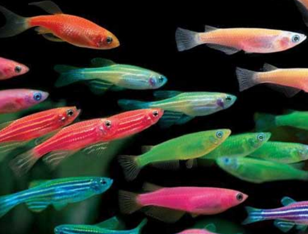

Bienvenidos a Animales Peces

Los peces (del latín pisces) son animales vertebrados primariamente acuáticos, generalmente ectotérmicos (regulan su temperatura a partir del medio ambiente) y con respiración por branquias. Suelen estar recubiertos por escamas, y están dotados de aletas, que permiten su movimiento continuo en los medios acuáticos, y branquias, con las que captan el oxígeno disuelto en el agua.
 El grupo Pisces no es un taxón porque sería parafilético. Los peces son abundantes tanto en agua salada como en agua dulce, pudiéndose encontrar especies desde los arroyos de montaña (por ejemplo, el gobio), así como en lo más profundo del océano (por ejemplo,
El grupo Pisces no es un taxón porque sería parafilético. Los peces son abundantes tanto en agua salada como en agua dulce, pudiéndose encontrar especies desde los arroyos de montaña (por ejemplo, el gobio), así como en lo más profundo del océano (por ejemplo,
os alimentos preparados con pescado son una importante fuente de alimentación para los seres humanos. Pueden ser grandes partir de ejemplares silvestres, o criados de manera similar al ganado (véase acuicultura). Hoy en día la llamada pesca deportiva cada día se vuelve una actividad más popular. Los peces han tenido un papel importante en muchas culturas a través de la historia, que van desde las deidades religiosas a temas de libros y películas.
El grupo de los peces es parafilético y se define como todos los vertebrados que no son tetrápodos, es decir, por la exclusión de un taxón (los tetrápodos) de otro mayor (los vertebrados), y no por la posesión de características derivadas comunes (apomorfías). Las especies hoy existentes pertenecen a tres grupos (a veces considerados clases, a veces superclases)